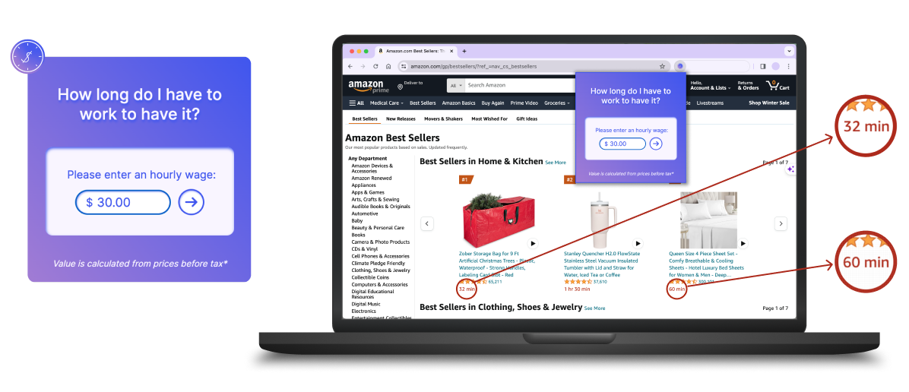
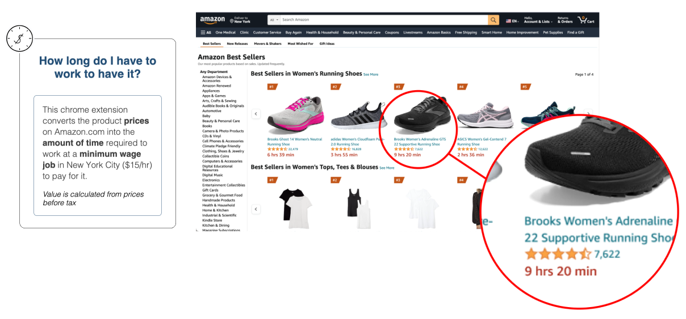

A category of intentionally impractical devices or contraptions
designed with the purpose of performing a seemingly useless
or absurd action, often igniting a humorous or thought-provoking
reaction.
Its lack of practical functionality challenges traditional
notions of utility and purpose in design, allowing individuals
to reconsider the meaning and value of everyday objects and actions.
How long do I have to work to have it?
A browser extension that recalculates e-commerce website prices with
the time one needs to work at their hourly wage to pay for it. Adjustable.

A commentary on and critique of societal values and consumerism
Deliberately challenges the conventional perspective on purchasing
goods by prompting users to consider not only the monetary cost but
also the time investment required. This critical examination prompts
users to rethink their spending habits and reassess the
worth of the items they desire.
In terms of its “usefulness” and “uselessness”...
While this machine’s usefulness lies in its unique perspective on money,
its impracticality surfaces in disrupting conventional shopping habits.
Users accustomed to assessing value through monetary figures may find
the approach unconventional and impractical for straightforward purchasing
decisions.
Personalized Hourly Wage Conversion:
"Usefulness"
Tailoring the extension to each individual's unique hourly wagespersonalizes the experience, allowing users to see the direct
relationship between their time and the cost of a product.
This customization fosters a stronger connection to the
critique of consumerism.
Empowering users to make decisions based on their own circumstances
adds practical value, even though it introduces a layer of complexity
May deter impulsive buying behavior...
"Uselessness"
The impracticality arises when users are focused on quick and
straightforward purchases.
Complexity makes the extension less functional for spontaneous
or impulsive purchases, aligning with the tradition of useless
machines that defy ease of use.
Playfully futile in the context of immediate purchasing decisions
Demo
Iteration- Calculation Based on Minimum Wage
This version recalculates e-commerce website prices with the time one needs to
work at a minimum wage job to pay for it.

2024 NYC Minimum Wage at $15/hr
"Usefulness"
This iteration broadens the critique to include societal issues,
specifically the concept of minimum wage. By converting prices
to the time it takes to earn the minimum wage, it sheds light
on economic disparities and prompts reflection on fairness and
justice.
Serving as a social commentary, it encourages users to consider
the challenges faced by those earning minimum wage and the
accessibility of certain products.
"Uselessness"
Similar to the main project, the impracticality arises when
users are focused on quick and straightforward purchases.
May be less relevant for users who don't work minimum
wage jobs or whose work isn't compensated hourly